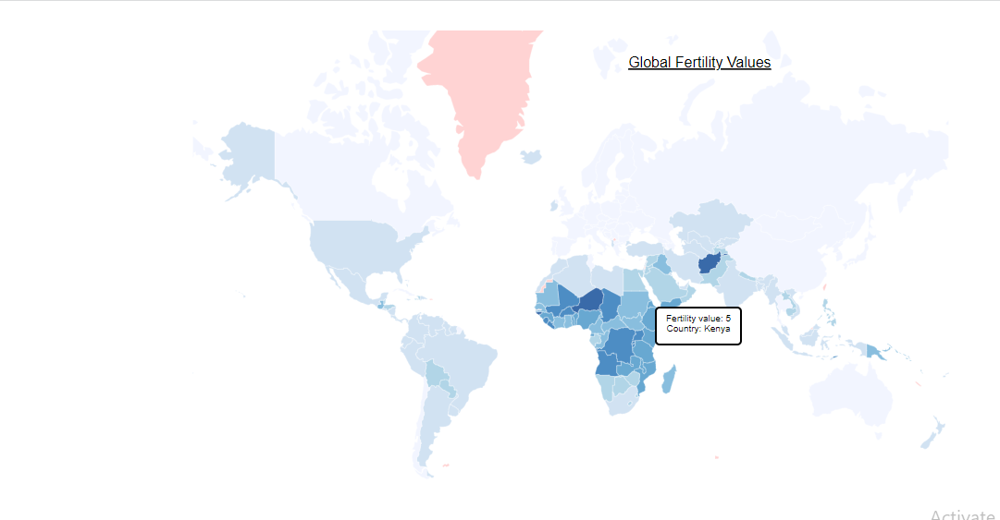

Global Fertility Rate
IS 545 Final Project
Ria Dhanani
Introduction
Fertility rate is the average number of children born to women during their reproductive years. The total fertility rate (TFR) is a major determinant of population growth rate. The visualization shows the total fertility rate(per woman) and the fertility rate of women in different countries.
Questions addressed by the Visualization
- What is the total fertility rate in each country?
- How much is the fertility rate of countries that have a high urban population growth rate?
- Has the fertility rate increased or decreased over the years in the United States?
Data
Visualization Details
The visualization has three charts. The map and the scatterplot are interconnected wherein when the user hovers over a country in the map, it is highlighted in the scatterplot. The scatterplot has the brushing feature. The third chart is a static line graph showing the trend of fertility rate in the United States. The upcoming slides briefly show the visualizatiosn with their respective code snippets.
Visualization
Map displaying fertility value of various countries. 
const map = svg
.append('g')
.attr('class', 'map');
svg.append('g')
.attr('class', 'countries')
.selectAll('path')
.data(countries.features)
.enter().append('path')
.attr("class", d => { return "COUNTRY-CODE-"+d.id; })
.attr('d', path)
.style('fill', d => color(fertilityById[d.id]))
.style('stroke', 'white')
.style('opacity', 0.8)
.style('stroke-width', 0.3)
.on('mouseover',mouseover)
.on('mousemove', function(d) {
d3.select(this).style("fill","red");
tooltip
.html("Fertility value: " + fertilityById[d.id] + "
" + "Country: " + d.properties.name)
.style("left", (d3.event.pageX) + "px")
.style("top", (d3.event.pageY - 28) + "px");
Visualization
Scatterplot showing the fertility rate for countries with a hiigh urban population growth rate.
var dot = scatterplot.selectAll(".dot")
.data(who)
.enter().append("circle")
.attr("class", d => { return "dot COUNTRY-"+ d.name; } )
.attr("r", 3.5)
.attr("cx", xMap)
.attr("cy", yMap)
.style("fill", function(d) { return color(d[fieldColor]);})
.on("mouseover", mouseover)
.on("mousemove",function(d) {
tooltip
.html("Fertility value: " + fertilityById[d.id] + "
" + "Country ID: " + d.id)
.style("left", (d3.event.pageX) + "px")
.style("top", (d3.event.pageY - 28) + "px");
})
Visualization
Line chart for visualizing the trend in fertility rate in the United States.
Promise.all([
d3.csv('USDataSubset.csv')
]).then(function(data) {
let FT = data[0];
let parseDate = d3.timeParse("%y");
FT.forEach(d => {
if(d["Country Name"] == "United States") {
d.Year = parseDate(d.Year), d.Value = (d.Value)}
});
// X axis
var x = d3.scaleLinear()
.domain(d3.extent(FT, function(d) { return d.Year; }))
.range([ 0, width2 ]);
chart2.append("g")
.attr("transform", "translate(0," + height2 + ")")
.call(d3.axisBottom(x))
// Y axis
var y = d3.scaleLinear()
.domain([0, d3.max(FT, function(d) { return +d.Value; })])
.range([ height2, 0 ]);
chart2.append("g")
.call(d3.axisLeft(y));
// Draw the line
chart2.append("path")
.datum(FT)
.attr("fill", "none")
.attr("stroke", "steelblue")
.attr("stroke-width", 1.5)
.attr("d", d3.line()
.x(function(d) { return x(d.Year) })
.y(function(d) { return y(d.Value) })
)
Conclusion
The visualization can be accessed here The future work will include a dropdown with countries for the line chart so the user can interact and view the trend line for the country of their choice.